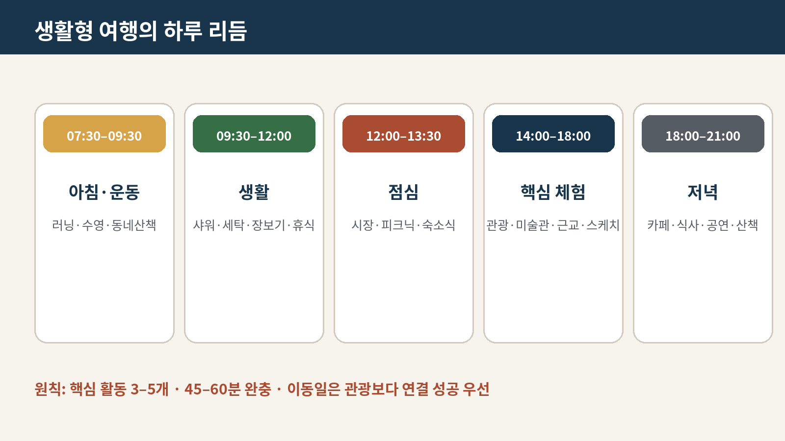

02. 전체 여행 경험 하이라이트

1. 이 여행에서 가장 중요한 16가지 경험
| 순서 | 경험 | 지역 | 여행에서의 의미 |
|---|---|---|---|
| 1 | Sagrada Família 내부의 빛 | Barcelona | Modernisme의 상징을 한 곳에 압축 |
| 2 | Sitges 교회 앞 바다와 쌀요리 | Sitges | 이동일을 문화·해안 경험으로 전환 |
| 3 | Girona 성벽에서 도시를 내려다보기 | Girona | 중세도시의 지형을 이해 |
| 4 | Collioure에서 야수파 그림과 실제 풍경 비교 | Collioure | 미술과 장소의 직접 연결 |
| 5 | Calella de Palafrugell의 작은 만에서 쉬기 | Costa Brava | 장거리 일정의 해안 완충 |
| 6 | Cours Saleya 시장과 Nice 구시가지 | Nice | 프랑스 첫 생활도시 경험 |
| 7 | Cannes·Monaco의 도시성 비교 | Côte d’Azur | 리조트도시와 도시국가의 대비 |
| 8 | Aix 시장재료로 숙소 점심 만들기 | Aix | 프로방스 생활리듬 시작 |
| 9 | Cassis의 Calanques와 Marseille 항구 | Provence coast | 내륙과 지중해 대도시의 대비 |
| 10 | Luberon 농가 테라스의 느린 저녁 | Luberon | 농가숙박의 핵심 목적 |
| 11 | Roussillon 오커와 Gordes 석조마을 | Luberon | 지질과 건축의 관계 |
| 12 | Palais des Papes와 Pont du Gard | Avignon region | 중세권력과 로마공학의 대비 |
| 13 | Fourvière에서 두 강의 도시 읽기 | Lyon | 도시지형을 한눈에 이해 |
| 14 | Annecy 구시가지에서 호수로 걸어나가기 | Annecy | 도시와 알프스 자연의 전환 |
| 15 | 파리에서 같은 시장·빵집 반복 이용 | Paris | ‘한 달 살기 축소판’의 핵심 |
| 16 | 미술관·공연·축구 중 그날 하나만 선택 | Paris | 문화도시를 피로 없이 경험 |
2. 지역별 대표 한 끼
| 지역 | 대표 경험식 | 주문 원칙 |
|---|---|---|
| Barcelona | 타파스 또는 해산물 | 작은 접시 3~4개 또는 해산물 3종 |
| Girona·Empordà | 카탈루냐 전통식·Collioure 생선 | 장거리 운전일에는 코스 축소 |
| Nice | petits farcis·daube·socca | socca는 간식, 전통저녁은 한 번 |
| Aix | 시장식·계절 지중해요리 | Cassis 해산물 뒤 저녁은 가볍게 |
| Luberon | 농가 테라스 식사 | 시장재료를 직접 조합 |
| Avignon | 남부 비스트로·Halles 포장식 | 특별식 1회, 시장식 1회 이상 |
| Lyon | quenelle 중심 bouchon | bouchon은 1~2회, 과식 방지 |
| Paris | 동네 비스트로·시장 숙소식 | 특별식 2회, 숙소식 4~5회 |
3. 스케치·사진 대표 장면
- Barcelona: Sant Pau 정원축
- Girona: Onyar 강변 주택
- Collioure: 항구와 교회
- Nice: Cours Saleya 시장
- Saint-Paul-de-Vence: 성벽골목
- Aix: Richelme 시장과 작은 광장
- Luberon: Gordes 전체전망보다 농가 주변 돌담·포도밭
- Avignon: Palais 광장의 늦은 오후
- Lyon: Saône 강변과 Vieux Lyon
- Annecy: Palais de l’Île와 Thiou 운하
- Paris: Luxembourg 의자, 시장가방, 아파트 식탁 같은 일상장면
4. 일부러 비워 둘 시간
- Nice 해변 또는 항구 카페 45분
- Calella de Palafrugell 바다 앞 30분
- Luberon 농가생활 반나절
- Avignon 성벽 안 저녁산책
- Lyon Parc de la Tête d’Or 1시간
- Paris 일요일 완충일과 매일 오후·저녁 사이 1시간
이 시간들은 남는 시간이 아니라, 장기여행의 만족도를 지키기 위해 예약해 둔 일정이다.